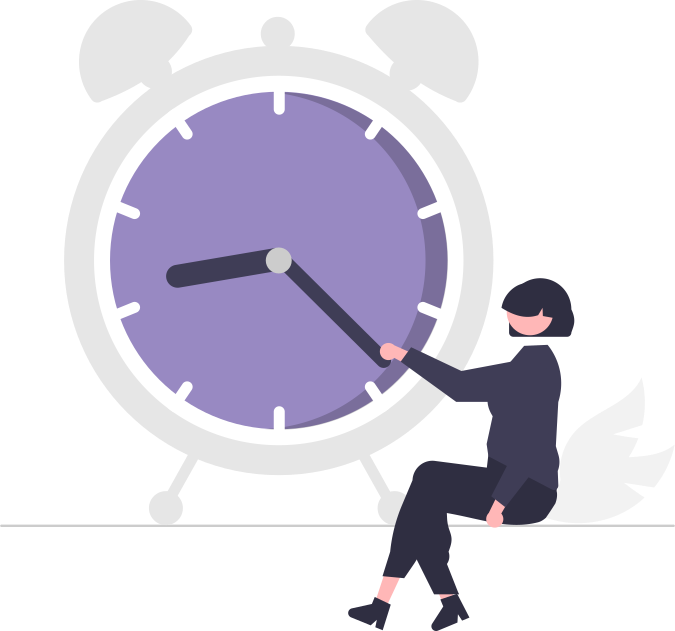

<!-- Categorías -->
<div class="mt-10" *ngIf="fuentes.length > 0">
    <app-filtro-eventos></app-filtro-eventos>
</div>

<ion-content [scrollEvents]="true">
    <div class="m-0" *ngIf="entradasHoy.length > 0">
        <h2 class="mx-8 my-2 font-medium">Hoy, <span class="font-light">{{hoy | date:'dd/MM'}}</span></h2>
        <div *ngFor="let entrada of entradasHoy" [ngClass]="getTextColorCategoria(entrada.id_categoria)" class="flex ion-activatable ripple-parent w-full px-8 py-1 text-purple" (click)="getEntrada(entrada.id_entrada)">
            <div class="flex h-auto rounded-l-lg px-4 py-3" [ngClass]="getColorCategoria(entrada.id_categoria)">
                <!-- No me gusta el ngClass -->
                <span>&#x200b;</span>
            </div>
            <div class="bg-white flex items-center w-full rounded-r-lg px-4 py-3">
                <div class="flex flex-col">
                    <h3>{{entrada.nombre}}</h3>
                    <h4 class="text-gray-500 font-light text-sm">{{entrada.hora_ini | date:'HH:mm'}} - {{entrada.hora_fin | date:'HH:mm'}}</h4>
                </div>
                <div class="flex items-center ml-auto">
                    <ion-icon *ngIf="entrada.recordatorio != 0 && entrada.recordatorio != null" color="primary" name="alarm" class="mr-1"></ion-icon>
                    <p class="font-semibold">{{tiempoRestante(entrada.hora_ini)}}</p>
                </div>
            </div>
            <ion-ripple-effect></ion-ripple-effect>
        </div>
    </div>

    <div class="m-0" *ngIf="entradasProximas.length > 0">
        <h2 class="mx-8 my-2 mt-4 font-medium">Próximos eventos</h2>
        <div *ngFor="let entrada of entradasProximas" [ngClass]="getTextColorCategoria(entrada.id_categoria)" class="flex ion-activatable ripple-parent w-full px-8 py-1" (click)="getEntrada(entrada.id_entrada)">
            <div class="flex h-auto rounded-l-lg px-4 py-3" [ngClass]="getColorCategoria(entrada.id_categoria)">
                <span>&#x200b;</span>
            </div>
            <div class="bg-white flex items-center w-full rounded-r-lg px-4 py-3">
                <div class="flex flex-col">
                    <h3>{{entrada.nombre}}</h3>
                    <h4 class="text-gray-500 font-light text-sm">{{entrada.hora_ini | date:'dd/MM'}} {{entrada.hora_ini | date:'HH:mm'}} - {{entrada.hora_fin | date:'HH:mm'}}</h4>
                </div>
                <ion-icon *ngIf="entrada.recordatorio != 0 && entrada.recordatorio != null" color="primary" name="alarm" class="ml-auto"></ion-icon>
            </div>
            <ion-ripple-effect></ion-ripple-effect>
        </div>
    </div>

    <div class="mx-8 my-2 px-1 py-2 flex bubble" *ngIf="fuentes.length == 0">
        <!-- <h4 class="text-gray-500 italic"><b>Oops!</b> Parece que no tienes ningún evento todavía, pulsa <span class="text-purple not-italic" (click)="nuevoEvento()">aquí</span> para añadir tu primer evento o selecciona el icono del <span class="text-purple not-italic">+</span>.</h4> -->
        <ion-icon name="information-circle" color="primary" class="w-24 text-2xl"></ion-icon>
        <h4 class="text-gray-500">Esta es tu sección de <b>eventos</b>. Aquí podrás encontrar todos tus eventos de los próximos <b>siete días</b>. ¡Añade uno pulsando <span class="text-purple font-semibold" (click)="nuevoEvento()">aquí</span>!</h4>
    </div>
    <div class="mx-8 my-2" *ngIf="entradasHoy.length == 0 && entradasProximas.length == 0 && fuentes.length > 0">
        <h4 class="text-gray-400 italic">No hay eventos.</h4>
    </div>
    <div class="flex justify-center" *ngIf="fuentes.length == 0">
        
    </div>
</ion-content>